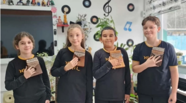

Return
Nilüfer Sanat
Nilüfer Sanat is the art club of NAIHL where students can explore various forms of art including painting, sculpture,music and digital art. Students interested in joining can contact Mr. Mustafa for more information.
Activities and Events
- Weekly Art Workshops
- Weekly Concerts
- Field Trips to Local Museums
- Guest Artist Sessions
Artists Spotlight
Each month, Nilüfer Sanat features a spotlight on a student artist, showcasing their work in the school gallery and online. This is a great opportunity for students to gain exposure and share their creativity with the school community.

Öncü Kalimbacılar
2025 Ocak'tan beri var olan bu müzik grubu, kalimbada öğrencilerin gösterdiği bireysel hız ve ilgilerini gösterişli bir şekilde kullanmalarıyla oluşmuştur.
Üyeler:
Yusuf ÖZKAN - 2 Konser, Hamza ÖZTÜRK - 3 Konser, Ayşe Melek OKUR - 1 Konser, Asel Ada BOYACIOĞLU - 1 Gerçekleştirilmiş Konser ve 1 Gelecek Konser, Muhammed Kerem HELİMOĞLU - 3 Konser

Duru ALTUNCU
Nilüfer Sanat'ın imajı olan Duru ALTUNCU, özellikle bağlama aşkıyla tanınır. Diğer sanatçılarla birlikte tınlayarak herkesi şok etmiştir.
BEAMZ Girls
Yakında Nilüfer Sanat'ı şok edecek, Asel Ada BOYACIOĞLU tarafından bulunmuş bir konser grubudur.
Üyeler:
Beren Nur BULUT - Gitarist
Elif Naz KAYA - Piyanist
Asel Ada BOYACIOĞLU - Vokalist ve Kalimbacı
Miray ÇETİN - Tasarımcı ve Defçi
Zehranur BERGE - Tasarımcı
Şevval GÜVEN - Kahoncu ve Yardımcı Vokalist
Hilal BEATRİZ ORUÇ
Çok güzel performans göstermiş bir piyanisttir.